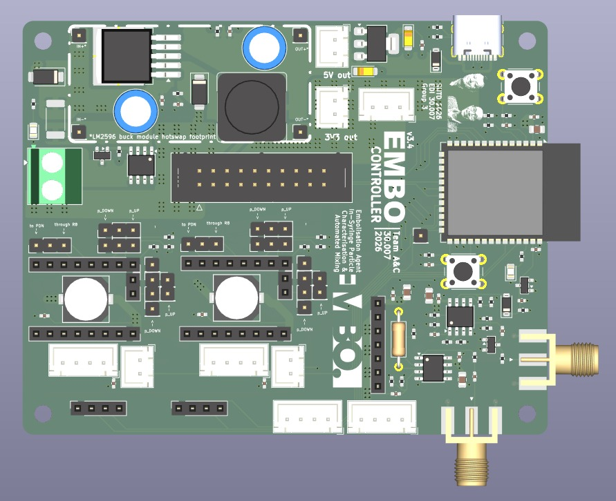
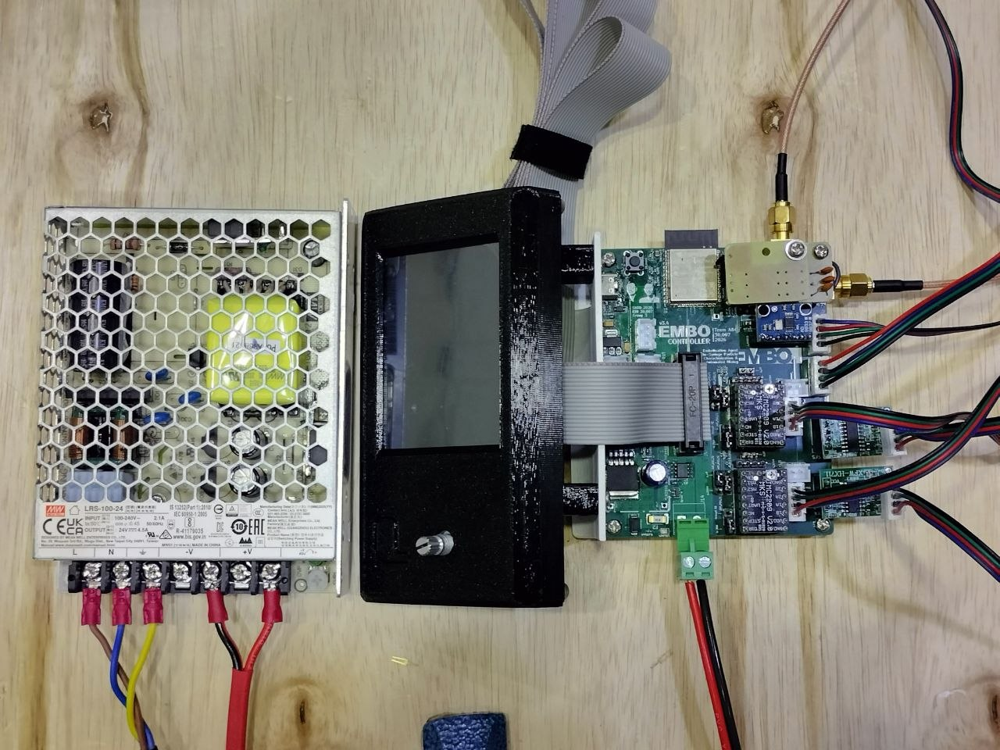
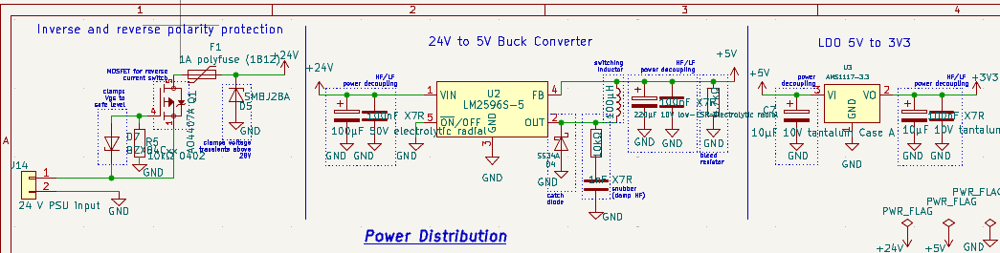
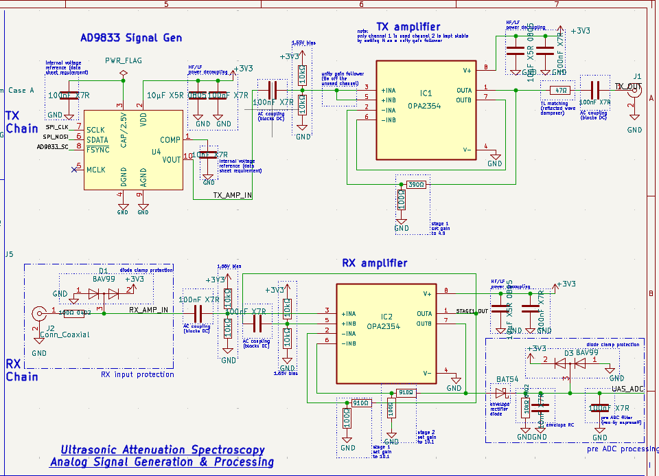

Electrical Architecture

Main controller PCB v3.4, 3D render.

Fabricated board, wired and under bring-up test.

Power distribution from 24V (motors) to 5V (sensors) and 3.3V (logic).

Ultrasonic attenuation spectroscopy signal chain.

Analog front-end designed to capture high-frequency attenuation data with minimal noise.

Core processing unit layout, highlighting data lines reserved for external communication.
- ESP32-S3-WROOM-1-N4 Main Controller: Runs the PID control loop, drives both stepper motors, manages the ultrasound signal chain, and interfaces with the TFT touchscreen UI and Raspberry Pi.
- 2x TMC2209 Stepper Drivers: Field-replaceable plug-in modules that drive the two syringe plungers via UART, with StallGuard providing an indirect force-feedback signal.
- Ultrasound Signal Chain: An AD9833 DDS generates a 1MHz sine wave, amplified by an OPA2354 Tx stage (G=4.9) and driven through a transducer; the received signal passes through a two-stage OPA2354 Rx amplifier (100x gain) and a BAT54 envelope detector before reaching the ADC.
- Turbidity Sensing: An APDS9960 measures ALS transmission and a MAX30102 measures backscatter, giving a second, optical estimate of slurry turbidity independent of the acoustic path.
- Force Sensing: Two load cells with HX711 24-bit amplifiers sit at each syringe plunger contact point, acting as a hardware fallback if the TMC2209's UART-based StallGuard reading proves unreliable.
- GPIO Protection Resistors: 220Ω resistors were added on every ESP32-to-TMC2209 control line in v3.4 after a hot-swap/spark incident damaged an earlier fabricated board.